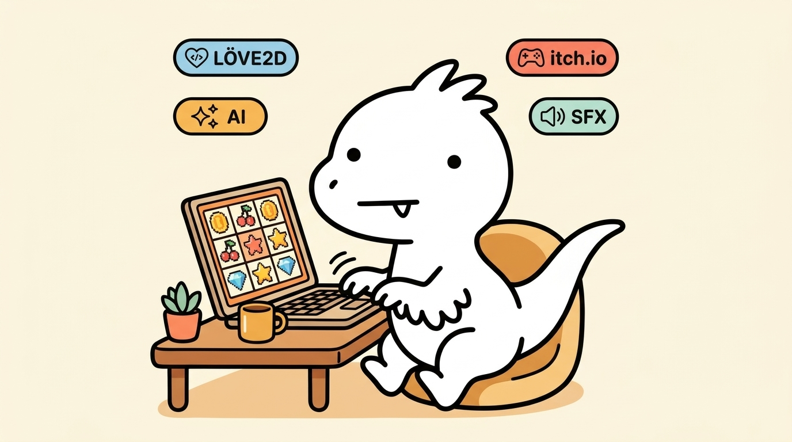
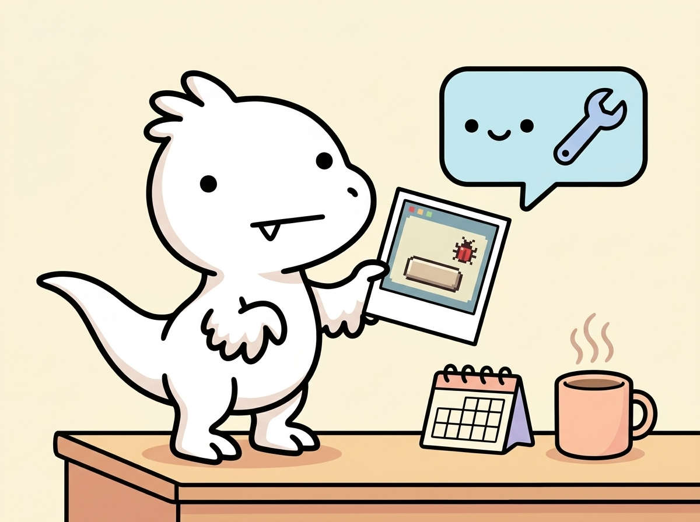
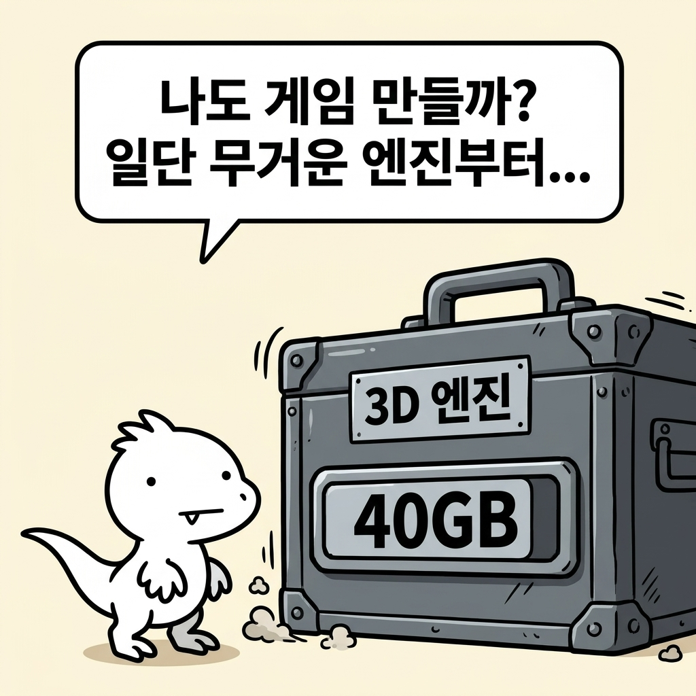
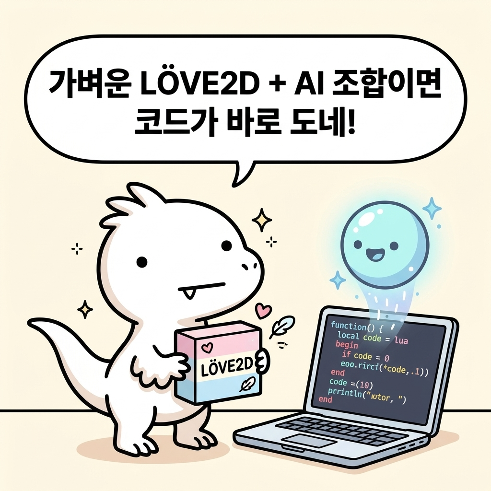
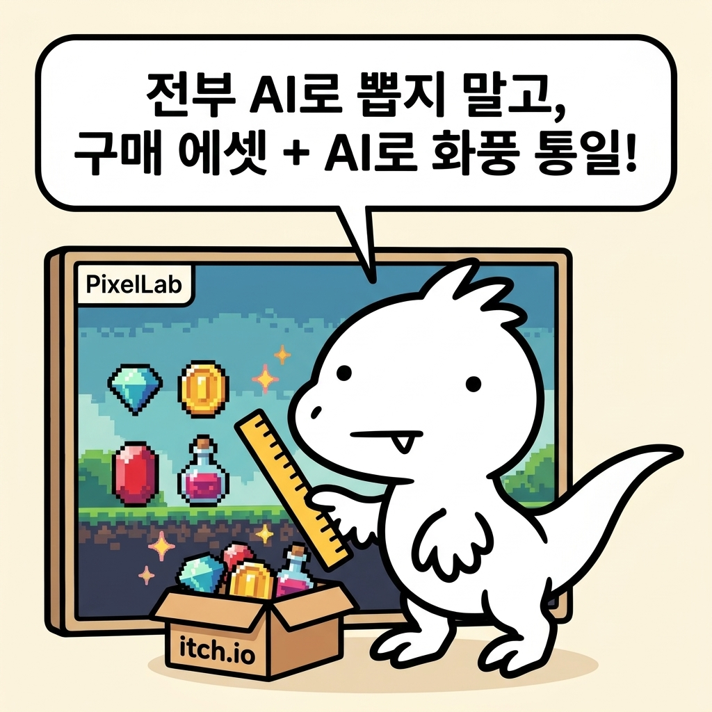
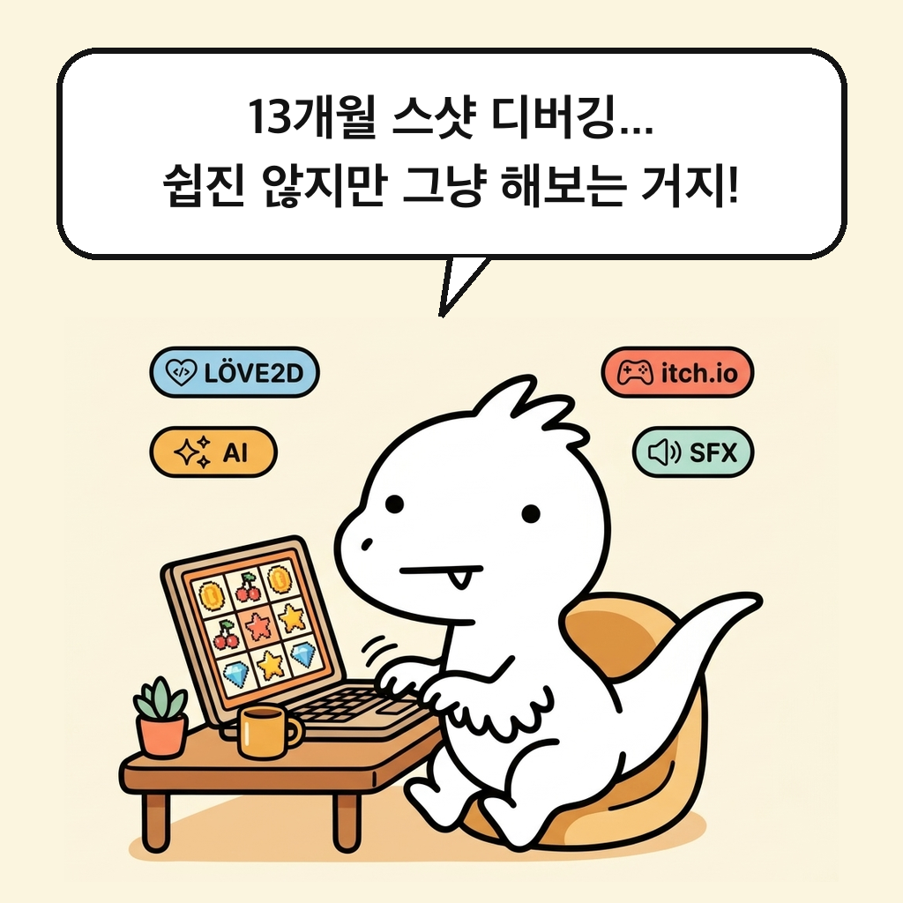

🦖 TECHTAEK · 벨로키 설명서LÖVE2D + AI 바이브 코딩2026-11-20 기준1인 게임 개발 응원판
코딩·아트 경험 0에서 스팀 출시까지: 슬롯바운드 1인 개발 스택 해부
“유니티 설치하다가 꺼버린 적 있나요?”
한국인 1인 개발자 김민(Optima Arch)이 13개월 만에 완성한 《슬롯바운드》의 도구 조합을 뜯어보고, 예비 1인 개발자가 오늘 바로 써먹을 수 있는 현실 로드맵을 정리했습니다.
한 줄 결론: 비개발자 1인 게임 개발의 승부처는 ‘비싼 3D 엔진’도 ‘프롬프트 한 줄 마법’도 아닙니다. AI가 고치기 쉬운 가벼운 코드 엔진(LÖVE2D) + 구매 에셋과 AI를 섞는 하이브리드 화풍 통일 + 스크린샷 찍어 고치는 13개월 맷집이었습니다. 쉽진 않지만, 이 조합이면 진짜 해볼 만합니다.

“엔진 가볍게, 에셋은 영리하게, 디버깅은 끈질기게. 그냥 해보는 거지!”
개발 기간 · 인원
13개월 · 1인
코딩·아트 비전공 출발
게임 엔진
LÖVE2D (Lua)
발라트로와 같은 경량 2D 엔진
스팀 출시 · 평가
26.11.12 · ~79%
대체로 긍정적 (Win·Mac·Deck)
핵심 전략
하이브리드
AI 100% 코드 + 구매에셋·인간오디오
1 슬롯바운드(Slotbound)에 실제로 들어간 솔루션 전체 해부
개발자가 Reddit 개발 일지, YouTube 인터뷰, 스팀 상점 페이지를 통해 직접 공개한 기술 스택입니다. 특정 AI 하나에 올인하지 않고, 역할별로 도구를 쪼개고 구독 한도에 맞춰 로테이션한 점이 눈에 띕니다.
게임 엔진 / 언어
LÖVE2D (Lua)
2D 경량 오픈소스 프레임워크. 무거운 에디터 GUI 없이 코드 중심으로 돌아가며 Windows·macOS·SteamOS(스팀 덱)까지 한 번에 대응했습니다.
코딩 AI / IDE
OpenAI Codex · Cursor · VS Code Copilot
초기에는 Copilot과 Cursor를 병행하다가, 이후 OpenAI Codex 중심으로 전환해 게임 코드를 사실상 100% AI로 생성했습니다.
하나의 모델에 갇히지 않고 작업 성격과 사용 한도에 따라 모델을 돌렸습니다. 후반부에는 GPT·Gemini 유료 구독 중심으로 정착했습니다.
아트 / 애니메이션 AI
PixelLab · Gemini Nano Banana (Nano Banana 2)
배경, 메인 메뉴 픽셀 아트, 상점 NPC 등 일부 애니메이션과 스팀 홍보용 시각 자료 제작에 활용했습니다.
픽셀 후처리 / 에셋
Sprite Fusion · itch.io 에셋 팩 · 수작업 보완
핵심 유닛과 아이콘은 itch.io 구매 에셋으로 통일감을 잡고, 픽셀 규격 정렬은 Sprite Fusion으로 맞춘 뒤 정식판에서 수작업으로 다듬었습니다.
사운드 / 효과음
ElevenLabs (초기) → 인간 제작 오디오 (정식판)
개발 초기에는 ElevenLabs 효과음을 하나씩 가져다 썼지만, 스팀 데모/정식 출시 시점에는 인간 제작 오디오로 구성하고 스팀 AI 공개 항목을 깔끔하게 분리했습니다.
2 왜 유니티·언리얼 대신 LÖVE2D(Lua)였을까?
1인 개발을 결심한 사람들이 제일 먼저 하는 실수가 “남들 다 쓰는 대형 엔진부터 깔기”입니다. 그런데 AI와 함께 만드는 바이브 코딩(Vibe Coding) 환경에서는 엔진 선택 기준이 완전히 뒤집힙니다.
AI가 게임 전체를 ‘텍스트 파일’로 한눈에 읽고 고칠 수 있습니다.
상태가 코드에 다 들어 있음: 클릭으로 숨겨진 인스펙터 설정값이나 씬(.unity/.uasset) 파일이 깨질 일이 적어 AI가 버그를 바로 추적합니다.
실행까지 1초 컷: 컴파일 대기가 거의 없어 “수정 → 실행 → 스크린샷 → 다시 수정” 루프를 하루 수십 번 돌릴 수 있습니다.
검증된 1인 히트작 계보: 포커 로그라이크 대히트작 《발라트로(Balatro)》의 1인 개발자 LocalThunk 역시 LÖVE2D + Lua로 만들었습니다.
주의할 점: 3D 그래픽이나 복잡한 물리 엔진 게임에는 맞지 않습니다. 2D 로그라이트·덱빌더·오토배틀러·퍼즐에 가장 강력합니다.
3 비개발자가 중간에 안 접고 출시까지 간 3가지 현실 기술
📸 1. 자동화 테스트 대신 ‘스크린샷 디버깅’
거창한 단위 테스트 코드를 짜는 대신, 게임을 직접 켜서 에러 로그를 복사하고 UI가 어긋난 화면을 스크린샷으로 찍어 AI에게 그대로 보여주며 고쳤습니다. 비개발자도 눈으로 보고 바로 지시할 수 있는 가장 직관적인 피드백 루프입니다.
🎨 2. AI 100% 금지! ‘구매 에셋 + AI + 규격 정렬’
모든 그림을 AI로만 뽑으면 캐릭터마다 픽셀 크기와 화풍이 제각각 튀어 ‘AI 티’가 납니다. 자주 보는 유닛·아이콘은 itch.io 에셋 팩으로 뼈대를 통일하고, 배경·NPC·홍보물만 PixelLab과 Nano Banana로 채운 뒤 Sprite Fusion으로 픽셀 격자를 맞췄습니다.
🔊 3. 스팀 AI 공개 기준에 맞춘 오디오 정리
초기 프로토타입은 ElevenLabs 효과음으로 빠르게 달렸지만, 정식판에서는 게임 내 오디오를 인간 제작 리소스로 정리했습니다. 덕분에 스팀 상점의 ‘AI 생성 콘텐츠 공개’ 항목에도 시각 에셋과 홍보 자료만 명확히 적어 불필요한 신뢰 리스크를 줄였습니다.

“말로 설명하기 어려우면? 그냥 스샷 찍어서 던져주면 된다!”
4 [체험] 내 조건으로 짜보는 1인 게임 시작 조합기
“나도 한번 해볼까?” 생각이 들었다면 아래 3가지를 골라 보세요. 슬롯바운드의 전략을 바탕으로 과욕을 덜어낸 현실적인 시작 세트를 뽑아줍니다.
① 지금 내 코딩 실력은?
② 그림·도트 실력은?
③ 첫 목표 기간은?
추천 세트: LÖVE2D + 무료 itch.io 에셋 + 스크린샷 디버깅
추천 엔진 / 환경LÖVE2D (Lua) 또는 웹 브라우저 HTML5 Canvas
코딩 AI 조합Cursor / Codex / Antigravity 중 1개 메인 + 보조 LLM 1개
아트 & 사운드 전략itch.io 무료/저가 16×16 에셋 팩 + 배경만 AI 보완 + 무료 효과음 팩
이번 주 단 하나의 목표네모 박스가 움직이고 버튼 누르면 점수 올라가는 1화면 띄우기
🦖 벨로키 한마디: “처음부터 오픈월드 RPG 만들면 3일 만에 접습니다. 마을 앞 슬라임 1마리 잡는 화면부터 띄워보세요!”
5 벨로키 4컷 만화: “쉽진 않지만, 그냥 해보는 거지!”
슬롯바운드 사례의 핵심 4단계를 만화로 압축했습니다. 거창한 완벽주의 대신 가벼운 시작과 꾸준한 수정이 핵심입니다.

1컷 · 의문: 대형 엔진 설치부터 기가 죽는다

2컷 · 전환: 가벼운 코드 엔진 + AI는 궁합이 좋다

3컷 · 기술: 구매 에셋 + AI 하이브리드로 화풍 통일

4컷 · 결론: 쉽진 않지만, 끝까지 해보는 사람이 만든다
6 솔직한 현실 체크 & 오늘 시작하는 5단계 체크리스트
희망 회로만 돌리면 2주 만에 지칩니다. 슬롯바운드 역시 출시 후 스팀 리뷰에서 “초반 도파민은 훌륭하지만 후반부 밸런스와 반복 파밍은 아쉽다”는 피드백을 받았습니다. AI가 코드를 100% 짜줘도 ‘재미의 설계’, ‘밸런스 튜닝’, ‘13개월을 버티는 맷집’은 결국 사람 몫입니다.
현실 체크 3가지: ① “프롬프트 한 줄로 뚝딱”은 거짓입니다(슬롯바운드도 13개월 걸렸습니다). ② 상용 출시를 노린다면 에셋 라이선스와 스팀의 AI 생성 콘텐츠 공개 규정을 반드시 확인해야 합니다. ③ 완벽한 기획서보다 오늘 밤 10분 만에 실행되는 허접한 1화면이 100배 낫습니다.
🌿 꼭 이렇게까지 안 해도 됩니다 — 더 쉽게 쉽게 가보자!
6개 도구·13개월은 “스팀 정식 출시” 기준입니다. 처음부터 각 잡지 말고 아래처럼 확 줄여서 시작해도 충분합니다.
• 엔진 설치도 귀찮다면? → 무료 AI한테 “브라우저에서 바로 도는 HTML 파일 1개짜리 미니게임 짜줘”로 시작하기
• 에셋 고르기도 부담스럽다면? → 픽셀 아트 대신 이모지(🦖🍒⭐)와 네모 도형만으로 먼저 손맛 확인하기
• 13개월이 막막하다면? → 스팀 출시 대신 “오늘 밤 2시간 만에 만들어 친구한테 보내는 장난감 게임”부터 쉽게 쉽게 가보기!